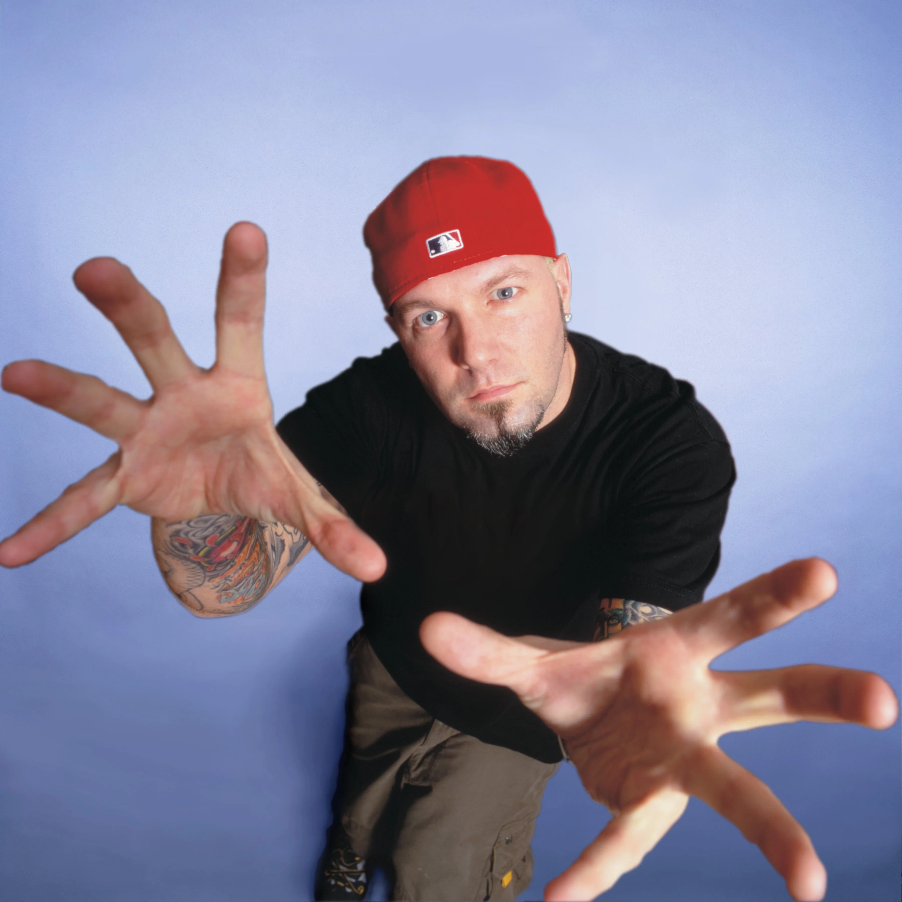

George Michael - "Faith"
Second single off debut solo album that sold 25 million records worldwide.
Started a 4 week run at #1 in the US.
Also reached #1 in Australia, Belgium, Canada, Netherlands, New Zealand.
Written, arranged, and produced by Michael.
Personnel:
George Michael - lead and harmony vocals, drum programming, handclaps, fingersnaps
Deon Estus - bass guitar
Hugh Burns - electric and acoustic guitars
Chris Cameron - synthesizer
In 1998, Limp Bizket, noted numetal/raprock band, released a music video for their cover of "Faith" that ended up spending 72 days charting on popular MTV's weekday top 10 music video countdown show Total Request Live (TRL), peaking at #3.
